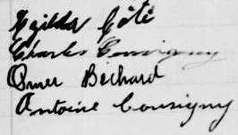
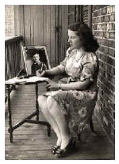
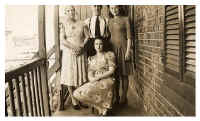
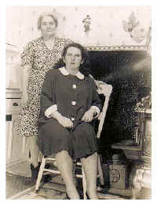
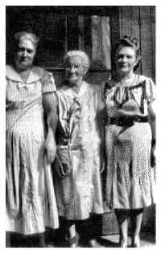
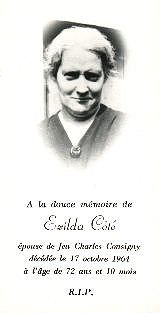

|
|
CHARLES ET ÉZILDA
LA
PREMIÈRE GUERRE
En
août 1914, l'Angleterre entre en guerre, et le Canada par le fait
même. Charles est l'un de ces milliers de jeunes gens qui affluent dans les centres de recrutement.
Ils s'enrôlent
par goût de l'aventure. L'attrait de l'Europe est très fort et l'on dit
partout que la guerre sera terminée pour Noël, alors pourquoi pas? Après
quelques semaines d'entraînement au Camp Valcartier, Charles s’enrôle le 26 septembre 1914
et s'embarque pour l'Europe en octobre. Nous
avons une copie de son certificat d’engagement.
Durant 4 ans et 8 mois Charles Consigny participe à la Grande Guerre en
Europe. Il appartient au Canadian
Artillery 1er Canadian Heavy Battery et son matricule est 43804 et il est
artilleur. Voici
son certificat de "discharge".
Selon les souvenirs de Jacqueline, sa fille, il
a
été "gazé". Sans doute que les
sévères migraines, dont il souffre tout le reste de sa vie, en sont les séquelles.
Il est aussi plus que probable que Charles souffre d'un certain niveau de
surdité car tous les artilleurs en étaient plus ou moins atteint.
CARTES
POSTALES REÇUES PAR ÉZILDA DES VIEUX-PAYS
Nous
ne savons pas comment Charles et Ézilda se sont connus, ni quand ils se
sont fiancés. Nous avons quelques cartes postales envoyées par Charles
à sa fiancée, à la fin de son séjour en Europe.
Trois
cartes de Namur en Belgique, le 19 février 1919: carte no
1 carte no2
carte no 3
une carte écrite en France
le 3 mars 1919, mais représentant une vue de Bruxelles.
une carte écrite de Ripon , une
vieille ville du Yorkshire Nord en Angleterre le 28 avril
1919.
| Pour en savoir plus sur la participation de Charles lors de la
première guerre mondiale, visitez le site, créé en 2010, qui
lui est consacré.
LA
GUERRE DE CHARLES |
|
|
LE
MARIAGE
 Charles retrouve sa famille et sa fiancée, Ézilda
Côté, fin mai 1919. Il retire le solde de son compte à l'armée, environ 755$
et les préparatifs de la noce commence. Ézilda habite le quartier Maisonneuve, au 580 Bourbonnière.
Elle est en demi-deuil de son père, aussi la voit-on vêtue de
noir sur les photos de cette période.
Les fiancés montent à Québec pour être les parrain et marraine, le 10 juin, du premier
fils de Crescence, la soeur de Charles. Charles retrouve sa famille et sa fiancée, Ézilda
Côté, fin mai 1919. Il retire le solde de son compte à l'armée, environ 755$
et les préparatifs de la noce commence. Ézilda habite le quartier Maisonneuve, au 580 Bourbonnière.
Elle est en demi-deuil de son père, aussi la voit-on vêtue de
noir sur les photos de cette période.
Les fiancés montent à Québec pour être les parrain et marraine, le 10 juin, du premier
fils de Crescence, la soeur de Charles.
Charles et Ézilda se marient dans la paroisse Très-St-Nom-de-Jésus à Montréal le 28 juillet 1919.
Sur l'acte de mariage Charles déclare comme métier qu'il est plombier. Leurs témoins sont Antoine,
frère de Charles, et Omer Béchard,
beau-frère d'Ézilda. Ce jour-là elle porte le cadeau de fiançailles de Charles, une paire de
boucles d’oreilles, des perles en forme de larmes. Nous possédons encore ces boucles d’oreilles.
|

Les signatures que l'on trouve au bas de l'acte de mariage. À noter qu'Ézilda est analphabète
mais elle a appris à signer son nom.
|
 |
Les nouveaux époux prennent le train pour Ottawa,
ils
y passent deux jours au Château Laurier en voyage de noces. À leur retour, la fête n’est
pas encore terminée. C’est une
vieille coutume, qui s’achève, de fêter ainsi une noce durant plusieurs
jours.
|
|
LA VIE DE COUPLE
Je suppose, qu'après leur mariage, le couple a vécu quelques années avec la famille
d'Ézilda. Ceci parce qu'on ne trouve aucune trace du couple dans les
annuaires Lovell avant 1925. Une telle cohabitation se
faisait couramment depuis longtemps, et même après la seconde
guerre, faute de ressources pour les jeunes couples. Ils ont
donc vécu d'abord au 580
Bourbonnière, puis au 2055 Ste-Catherine, et au 2709 Ontario, et au 2531
Ste-Catherine est. (N.B. ces adresses datent d'avant les changements de numérotation de la ville et ne
correspondent plus à celles d'aujourd'hui).
Nous trouvons un logement au nom de Consini Eug seulement à
partir de 1925, et c'est au 2179 Létourneux.
Charles
déclare comme métier, sur les actes de naissance de ses enfants,
plombier ou journalier. Nous n'en savons pas plus, sinon que retrouver
du travail pour les hommes ayant passé tant de temps en Europe n'est
pas facile, et que le couple a dû aussi traverser la "grand
crise".
Nous avons une série de quatre cartes
postales, envoyées
dans les années 1920 probablement, elles révèlent chez Charles de l’ennui et un
certain désarroi. Il y mentionne
des démarches entreprises pour aller à Boston suivre une nouvelle
formation qui lui permettrait de travailler comme Rolland, son
beau-frère. Une partie du texte est illisible, donc nous ignorons
en fait ce qu'il avait en tête...
Charles
et Ézilda ont cinq enfants, dont trois deviennent adultes, et passent leur vie dans Maisonneuve. Ils
sont entourés de nombreux parents, la mère et tous les frères et
soeurs d'Ézilda, et le frère de Charles, Antoine. |
|
ENCORE LA GUERRE
Lorsque la 2ème guerre mondiale éclate, Charles reprend du
service actif. Il signe sa formule d’enrôlement le 3 juin 1940 à Montréal.
On le rattache à l’unité no. 4 A Veterans Guard of Canada avec le
matricule D-107010. Les deux époux restent en contact par correspondance, soit par des
lettres ou des cartes
postales. Analphabète, Ézilda doit se faire lire les lettres de Charles par un tiers,
et lui dicter sa réponse. Les
enfants servent de tiers dès qu’ils savent lire et écrire. En juillet 1940
Charles est à Québec, en septembre à l’île-aux-Noix.
En 1941 il est assigné à Kingston.
|

Charles Consigny
|

Arsène
et Charles en 1940-41
Le père et le fils posent devant une pièce d'artillerie,
Charles
a appartenu à une unité d'artillerie durant la première guerre.
|
Charles y décède le 19 octobre 1941. Son certificat de décès mentionne comme cause officielle
‘thombois’, c'est-à-dire, selon toute vraisemblance, une
thrombose (formation de caillots dans un
vaisseau sanguin). Mais le doute
subsistera toujours pour sa famille. En
effet, Ézilda demande à voir une dernière fois son époux avant les funérailles.
Les autorités militaires refusent d’ouvrir le cerceuil. Ce refus offusque la famille et lui laisse supposer que le corps de Charles pourrait
porter des marques prouvant une cause de décès non naturelle! La dernière assignation de Charles étant supposément
gardien de prisonniers allemands, aurait-il été tué lors d’une évasion ou
une tentative d’évasion ?
On retrouve le nom de Charles Consigny à Ottawa dans le
Livre du Souvenir de la seconde guerre mondiale de 1941, page 27.
Charles est inhumé au cimetière catholique Côte-des-Neiges à
Montréal dans le lot 3410-M tombe 4805. Ce terrain appartient à
l’armée, on y retrouve plein de petits monuments blancs. Le
gouvernement fédéral a en effet acheté durant la première guerre
deux grands terrains pour enterrer ses soldats, un au cimetière
catholique et l'autre au cimetière protestant. Ces deux cimetières
sont voisins, sur le Mont-Royal, mais une clôture les sépare depuis
leur fondation au milieu du X1Xème siècle. Les deux terrains
appartenant à l'armée se jouxtant, cette dernière a exigé, dans le
contrat d'achat, la construction d'une porte dans la clôture séparant
ses deux terrains. L'armée ne voulait aucune séparation entre ses
soldats catholiques et protestants qui avaient combattu côte à côte
durant la guerre. Cette porte est le seul lien, encore aujourd'hui, qui
unit les deux cimetières du Mont-Royal. |
|
ÉZILDA, VEUVE
Ézilda vit d’une pension de "veuve de vétéran"
versée mensuellement par le gouvernement fédéral. Cette pension la sauve de l'indigence, car, à cette époque, le système de
sécurité de revenu n'existe pas encore. Seule la pension de vieillesse
du fédéral est déjà instaurée, mais elle est versée à 70 ans, alors
qu'Ézilda n'a que 50 ans lorsqu'elle devient veuve. Son fils Arsène, ayant
maintenant le statut de "fils unique d'une veuve" est dispensé
d'aller à la guerre en Europe même si, comme la plupart des jeunes gens de
cette époque, il avait reçu un entraînement militaire (à la Grosse Île,
face à Montmagny, entre autres).
Les
enfants d'Ézilda débutent le travail en usine dès l'âge de 15-16 ans pour aider leur
mère, en lui payant une "pension" chaque semaine. C'est la
manière de vivre de l'époque: les enfants doivent aider financièrement leurs
parents le plus tôt possible dans leur vie. L'éducation plus poussée
que le niveau primaire n'est pas la norme. Jacqueline travaille chez American
Can co., coin Ontario et Pie IX. Son oncle Antoine Consigny
y travaille, et "y a fait engager" sa jeune nièce.
Fabiola travaille dans une usine de munitions durant la guerre, elle y
reçoit un bon salaire, mais pour un travail à risques.
Les trois enfants
d'Ézilda se
marient tous en 1946. Pour les deux
filles, Fabiola et Jacqueline, elle doit assumer les dépenses entières de la
noce en tant que "parent de la mariée". Le mariage de Fabiola avec Elphège Daoust est déjà planifié pour le 29 juin 1946 lorsque Jacqueline décide de se marier aussi ce jour-là avec
Gérard Charette, récemment revenu
d’Europe au printemps 1946. Les
deux filles d'Ézilda font donc un "mariage double". Quant à Arsène,
il épouse Marthe Chaput le 21 décembre de la même année.
|
Ces
photos sont envoyées à Gérard Charette qui est en Europe en
1945-46 pour participer à la deuxième guerre mondiale. |
|

Marthe Chaput (fiancée
d'Arsène), Jacqueline, Fabiola, Arsène, Ézilda, Elphège (fiancé
de Fabiola) au Jardin Botanique.
|

Jacqueline a créé une petite mise
en scène sur la galerie arrière du 2179 Létourneux. On suppose
qu'habituellement elle s'installait ailleurs pour écrire à Gérard, mais
on ne peut douter que les deux fiançés n'aient eu une correspondance
soutenue considérant le nombre de cartes postales qu'il nous reste de
cette époque.
|

Ézilda, Elphège, Fabiola et
Jacqueline, galerie arrière du 2179 Létourneux
Plusieurs photos
sont prises à l'extérieur considérant que l'éclairage est meilleur
pour les caméras de l'époque.
|
|

Fabiola, Ézilda,
Jacqueline
29 juin 1946, paroisse St-Jean-Baptiste-de-Lasalle
|

Photo de groupe prise
devant l'école des filles "St-Nom-de-Jésus", coin
sud-est Hochelaga et Pie IX
.
|

identification des
invités
|
Ézilda
ne se retrouve quand même pas seule car, suite à une pénurie de logements
(aucun nouveau logement n'est construit durant la guerre et beaucoup de mariages
ont lieu à la fin de celle-ci), les nouveaux mariés de cette époque vivent
chez leurs parents. Ainsi Fabiola et Elphège passent cinq ans chez la
mère de ce dernier et Jacqueline, après un bref séjour chez sa belle-mère,
retourne chez sa mère. Elle et son époux Gérard y passent plus d'un an
et y ont leur premier enfant, Nicole. Ainsi
donc, Ézilda devient grand-mère. Elle aura 16 petits-enfants. Elle voit aux
"relevailles" des ses deux filles, et ce, après chaque
accouchement. Ce qui implique des séjours chez-elles, la prise en charge
de la maisonnée et des enfants, les soins au nouveau-né et à sa mère.
C'est une coutume d'entraide mère-fille à laquelle elle n'a jamais fait
défaut, et ce jusqu'à la naissance de son dernier petit-fils, François,
quelques mois avant qu'elle ne décède en 1964.
|

Ézilda, Jacqueline, hiver 1947
|

Ézilda, Gérard, 13 avril 1947, baptême de
Nicole
|

Ézilda, ses enfants et petits-enfants, à la
St-Jean de 1951
|
À
partir de 1948 Ézilda vit seule au 2179 Létourneux, sauf la période
durant laquelle elle accueille sa mère.
Georgianna Pageau, dont la santé décline, laisse son logement
rue Lasalle et fait des séjours chez certains enfants, mais surtout
chez son fils Émilien, jusqu’à son décès le 4 août 1951.
|

Georgianna et deux de ses filles
|

Ézilda, Nicole, Georgianna
|
Au
milieu des années 1950, Ézilda peut compter sur sa fille Fabiola et son gendre
Elphège qui emménagent dans le logement tout près, au 2175 Létourneux. Ils y vivent avec leurs quatre enfants.
Elphège travaille comme concierge pour la Commission scolaire catholique. Quant à Arsène, il passe la
majeure partie de sa vie d'homme marié sur la rue Orléans, aussi dans le
quartier Maisonneuve. Seule Jacqueline vit plus loin de sa mère, d'abord
dans le quartier Verdun, puis le Nord de Montréal, et à St-Luc, petit village
du comté de St-Jean à environ vingt milles de Montréal. Elle visite
quand même très régulièrement Ézilda.
Ézilda décède chez-elle le 17 octobre 1964.
Elle aurait succombé à des problèmes respiratoires suite à des
travaux de peinture qu'elle avait entrepris seule dans son logement, ou,
selon d'autres, à un anévrisme. C'est son petit-fils Robert Daoust qui aurait donné l'alerte.
Son frère Gilles se souvient que c'était une très
belle journée d'automne, il se rappelle voir arriver en trombe la voiture
d'Arsène qui venait d'être informé de la situation. Arsène
travaillait de nuit pour le Canadien National (les chemins de fer), il était
donc chez-lui le jour et on a pu le rejoindre ainsi rapidement, sans doute
l'a-t-on réveillé.
Le
hasard a voulu que l'appel d'urgence  (ce qu'on
appelle aujourd'hui le 911) ait été reçu par Gérard Charette, le gendre d'Ézilda. Il travaillait comme
répartiteur des appels d'urgence pour la
police de Montréal. Son horaire de travail était de six heures
d'affilée par jour, et il "changeait de chiffre" chaque
semaine. Donc le 17 octobre 1964, Gérard travaillait de jour et a envoyé
lui-même les services d'urgence chez Ézilda. Mais il était trop
tard. Gérard a quitté le travail pour se rendre rapidement sur les
lieux, puis est retourné chez-lui à St-Luc annoncer de vive voix la nouvelle
à Jacqueline. Voici le témoignage de Francine: "
Je me rappelle que ce jour-là je jouais seule dehors, et il faisait beau. J'ai aperçu la voiture de papa lorsqu'elle a passé
près de l'ex-garage de mon oncle Benoît. Je suis entrée en courant dire
à maman que papa arrivait. Elle m'a répondu que c'était impossible,
qu'il travaillait, mais c'était bien lui. Ils se sont retirés et il lui
a annoncé la nouvelle."
Ézilda
espérait être enterrée près de son époux, mais ce ne fut évidemment
pas possible. Aussi, suite à son décès le 17 octobre 1964, fut-elle
inhumée dans une fosse commune au cimetière catholique Côte-des-Neiges
.
|
|

|
|
 CHEZ
LES CONSIGNY
CHEZ
LES CONSIGNY